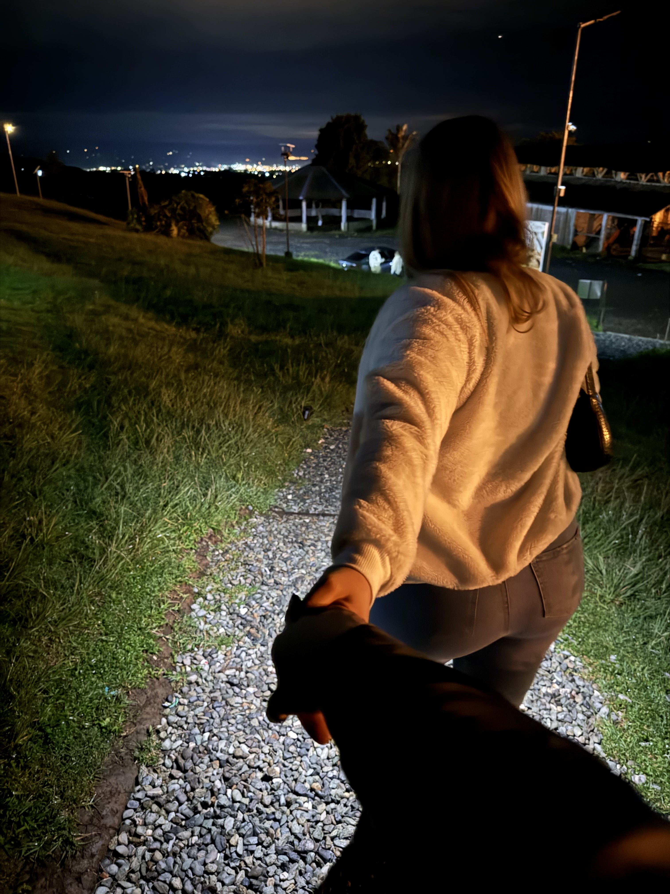
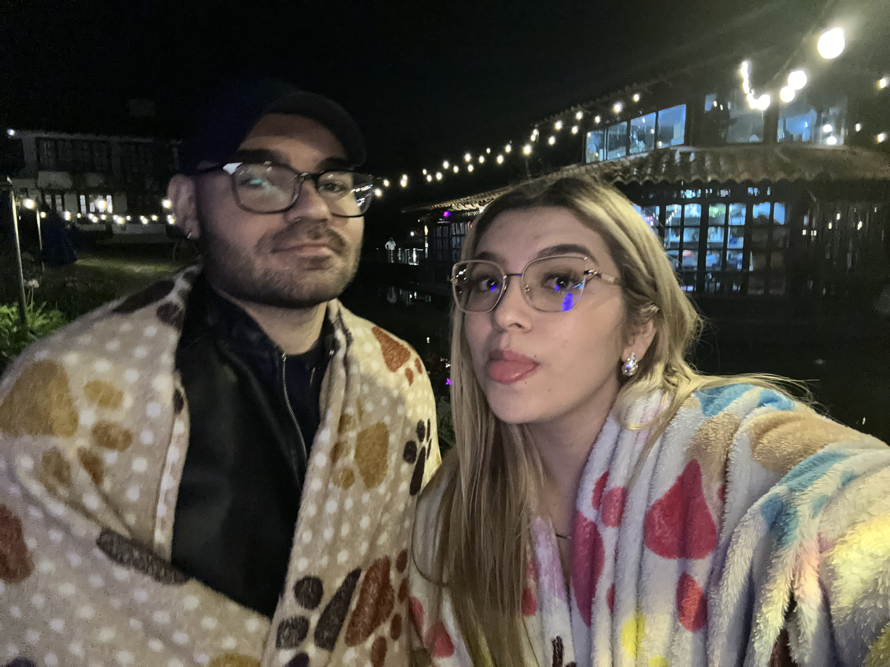
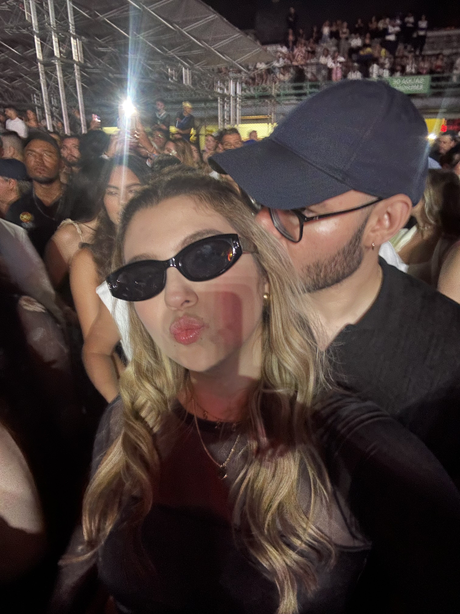
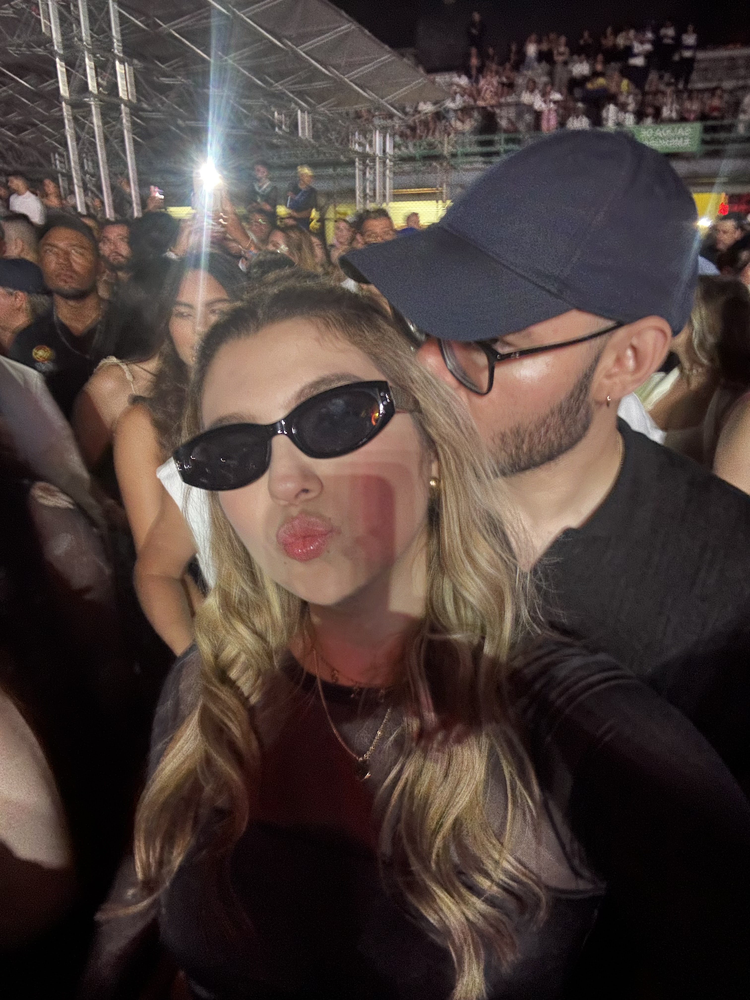

Mi pulguita,
Hoy no es solo el día en que cumplimos dos meses juntos; hoy miro hacia atrás y mi corazón se llena de gratitud por cada momento a tu lado. Ha sido un regalo, una confirmación de que el amor es mucho más de lo que alguna vez imaginé.
Contigo, he aprendido que el amor no duele, que el amor genera paz y que, sobre todo, el amor sana. Has llegado a mi vida para demostrarme que existe una conexión profunda y hermosa, capaz de transformar cada día en algo extraordinario.
Cuando te miro, sigo viendo magia. Eres esa luz que ilumina mi mundo, la fuerza que me impulsa y la calma que me envuelve. No hay duda de que eres la mujer que tantas veces visualicé, que tantas veces pedí a Dios. Deseo con toda mi alma seguir compartiendo cada paso, cada risa, cada sueño y cada aprendizaje contigo. Crecer a tu lado es la aventura más hermosa que he podido emprender.
Te amo con todo mi ser.
 ![[Image of intertwined hands with a blurred romantic background]](unnamed_2.jpg) 
